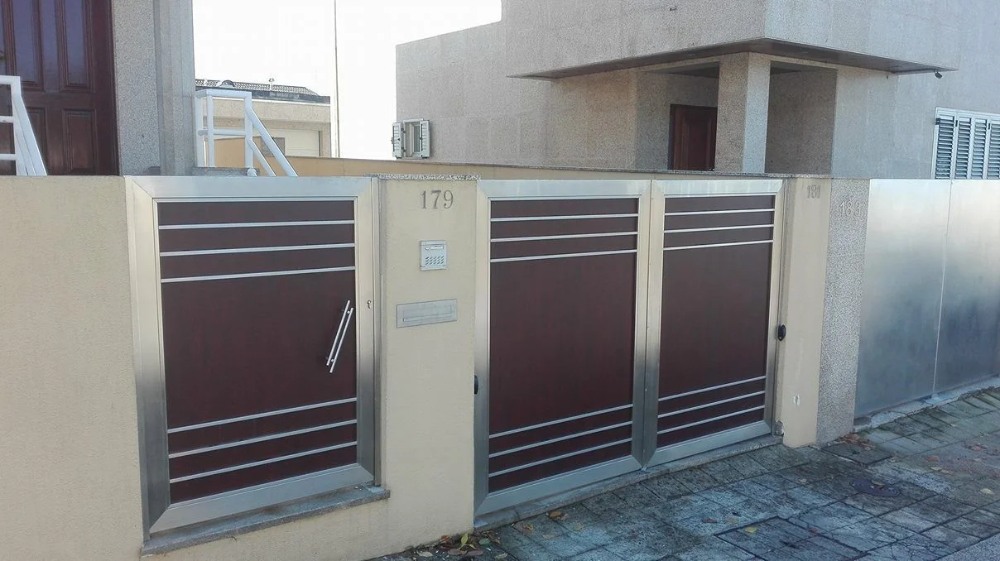
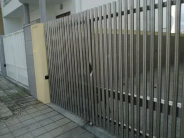
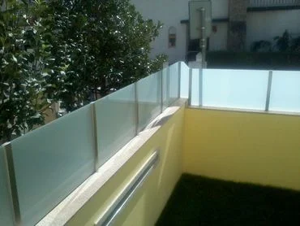
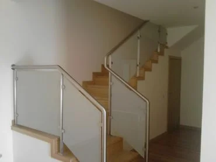

Dar uma função à galeria.
Acrescentei uma forma de partir de uma fotografia para o pedido. O tipo de trabalho fica identificado no resumo, sem assumir material ou medidas.
Serralharia Branco · Leça do Balio
Caixilharia e estruturas metálicas. Veja exemplos de trabalhos e prepare a informação para o seu pedido.
Organizar o pedidoAlumínio · Ferro · Aço inox

Da galeria oficial
Uma entrada, uma varanda ou uma escada têm condições diferentes. Use um exemplo para explicar o que procura, sem o tomar como especificação técnica.



Experimente o percurso
Escolha o tipo de trabalho e veja o que já tem para o explicar. A medição final, o material e a solução precisam de confirmação pela equipa.
Simulação local · nada é enviadoUma proposta de Ricardo Almeida
A vossa galeria já permite ver vários trabalhos. Nesta proposta, liguei alguns desses exemplos a um percurso curto: identificar o trabalho, explicar a situação e preparar os elementos para o contacto.
Experimentar as mudançasAcrescentei uma forma de partir de uma fotografia para o pedido. O tipo de trabalho fica identificado no resumo, sem assumir material ou medidas.
Incluí medidas aproximadas, fotografias do local e uma referência. O visitante percebe o que pode reunir antes da conversa, sem carregar ficheiros nesta demonstração.
O percurso organiza informação; não calcula preços nem escolhe uma solução. Medição, montagem, materiais e acabamento continuam sujeitos à vossa avaliação.
O que proponho filmar
Proponho filmar o fabrico e a montagem de uma peça que possam divulgar. Por exemplo, acompanhar a preparação, uma união e o ajuste no local, com uma explicação curta da equipa. Junto da fotografia final no site, esse filme permite ver uma parte do trabalho que está por trás do resultado. A peça, autorizações e âmbito seriam definidos convosco.
Na Canvas Custom Furniture, fiz a filmagem, a edição e o website com integração do filme. As imagens mostram a oficina e a execução do trabalho. O visitante pode ver a execução para além de ler a apresentação da empresa.
Ver o projeto CanvasGostava de perceber que trabalhos querem destacar e como recebem os pedidos hoje.